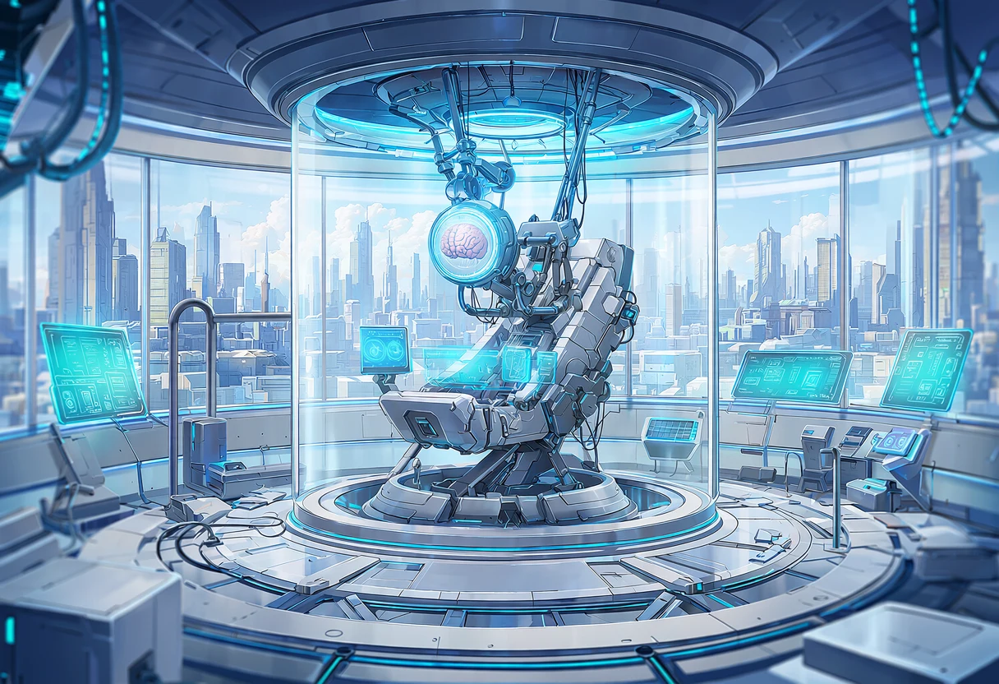
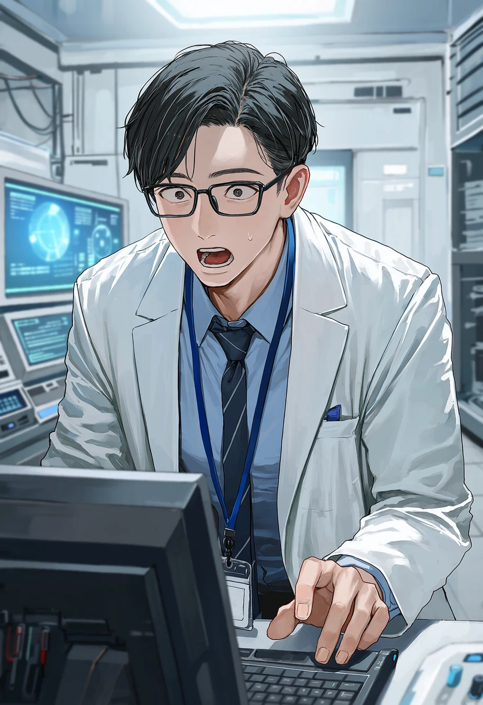
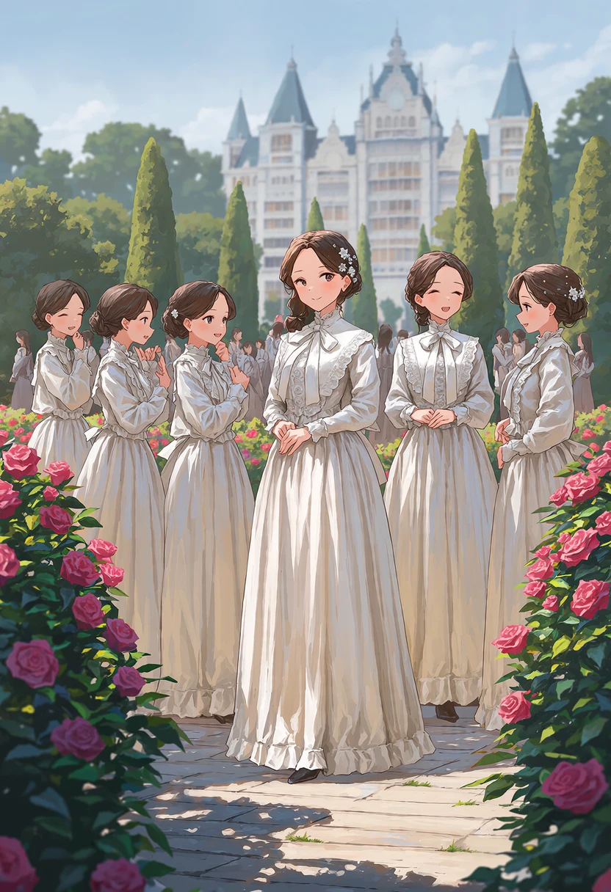
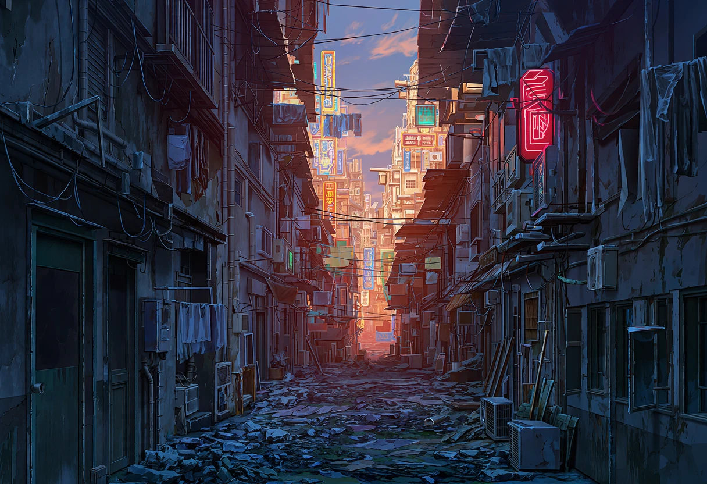
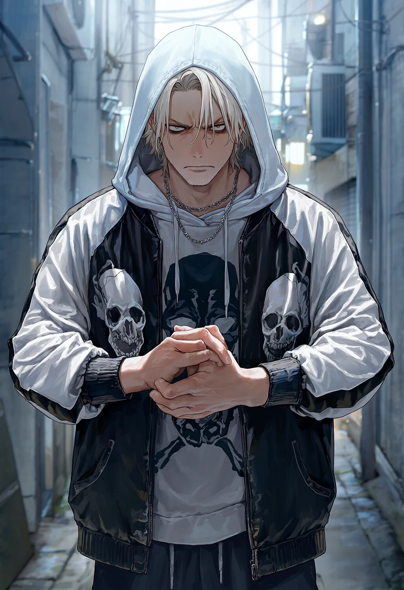
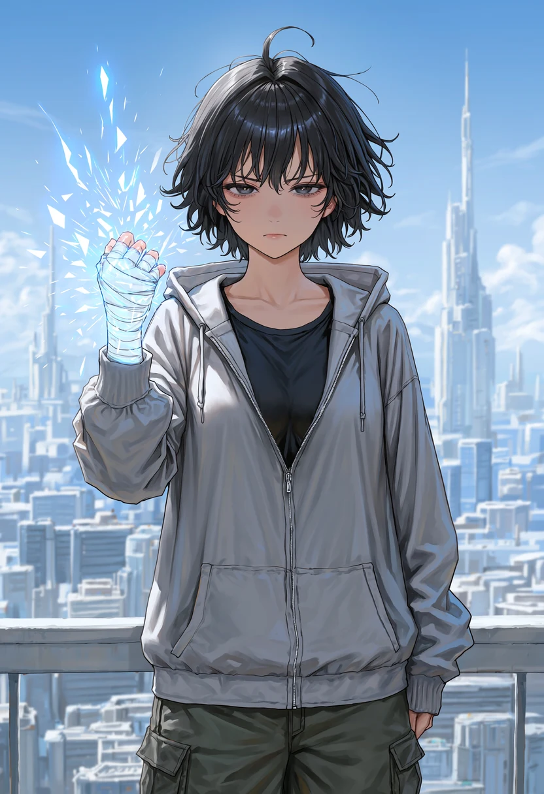
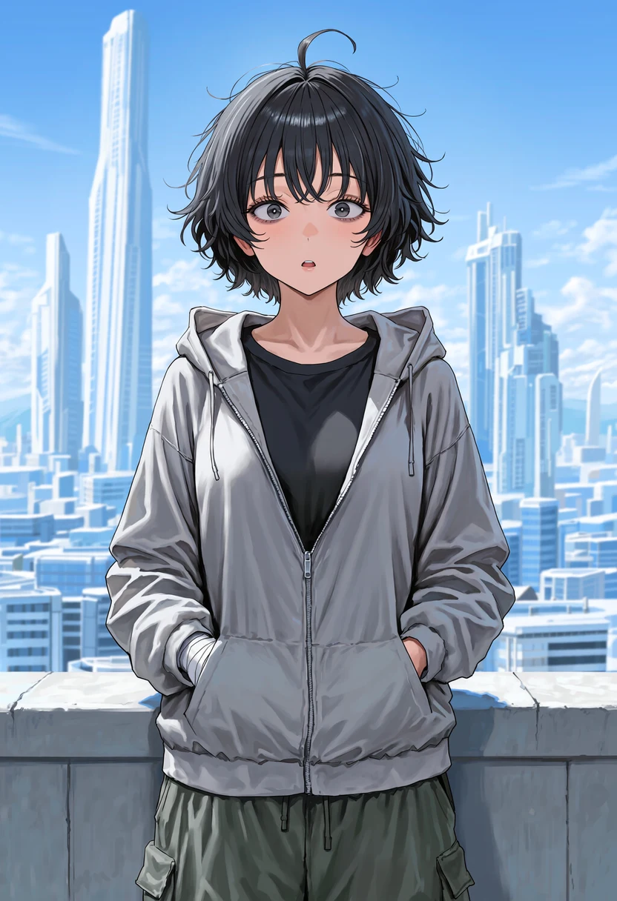
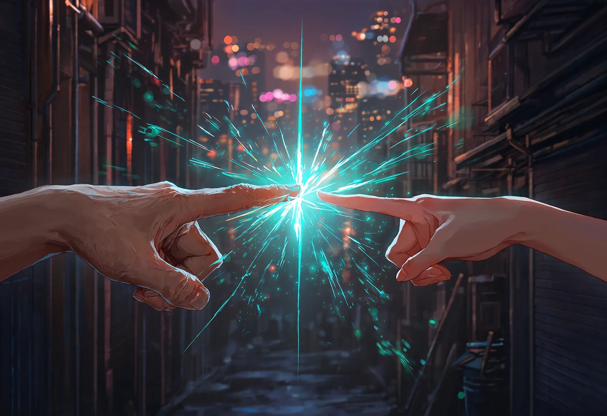
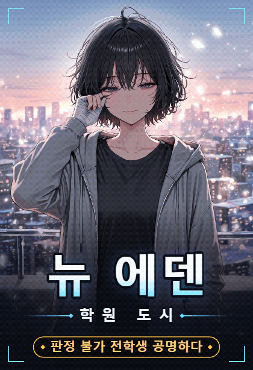

판정 불가
학원도시 뉴에덴 · 0화
EPISODE 0

인천 앞바다의 인공섬, 학원도시 뉴에덴.
인구 180만 중 80%가 학생. 이 섬에서는 등급이 곧 신분이다.
인구 180만 중 80%가 학생. 이 섬에서는 등급이 곧 신분이다.

전학 첫날. 모든 학생이 거치는 위상 측정.
[ 위상 : 판정 불가 ]

연구원…다시. 다시 해 봐.
네 번째도 같았다. 유리벽 너머에서 누군가 급하게 통화를 시작했다.

상아탑 학생판정 불가래.
상아탑 학생위상 0보다 아래 아냐? 풉.

배정된 기숙사는 햇빛이 들지 않는 곳. 지하층 B-13호.
콰앙―!!
해 질 녘 상업구. 모노레일 역으로 가는 골목에서 폭발음이 터졌다.

발화 능력자위상 3이다! 앵커 오기 전에 다 털어!
도망치는 사람들 사이로, 회색 후드티 하나가 거꾸로 걸어 들어갔다.

???…하아. 재수 없어.
붕대 감은 오른손이 불길에 닿는 순간, 불꽃이 거짓말처럼 사라졌다.

하지만 두 번째 불덩이가 날아온다. 정확히, 당신이 서 있는 쪽으로.
???야, 거기 너! 엎드려!

그녀의 손목을 잡은 순간,
몸 안에서 무언가가 공명했다.
몸 안에서 무언가가 공명했다.
???또 너야, 강하루? 그리고… 너는 누구야?
그날, 측정기가 처음으로 「판정 불가」를 띄웠다.
그리고 당신은 여덟 명의 소녀와 공명하기 시작했다.

크랙에서 이어서 플레이 ▶ 세계관 아카이브